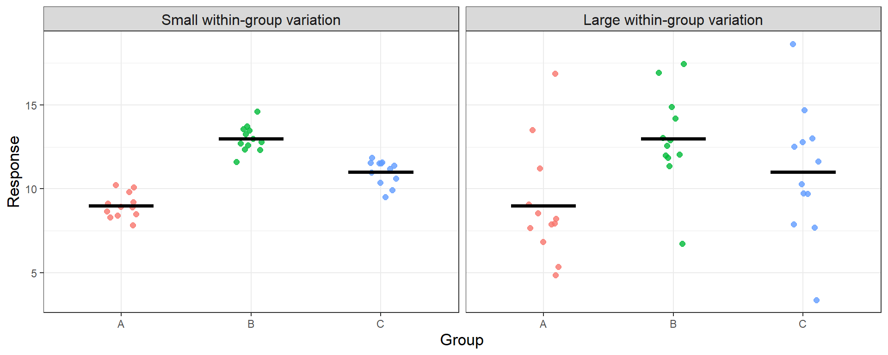
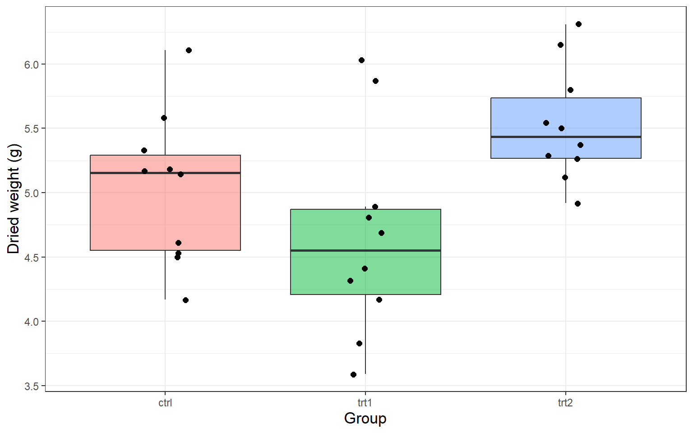
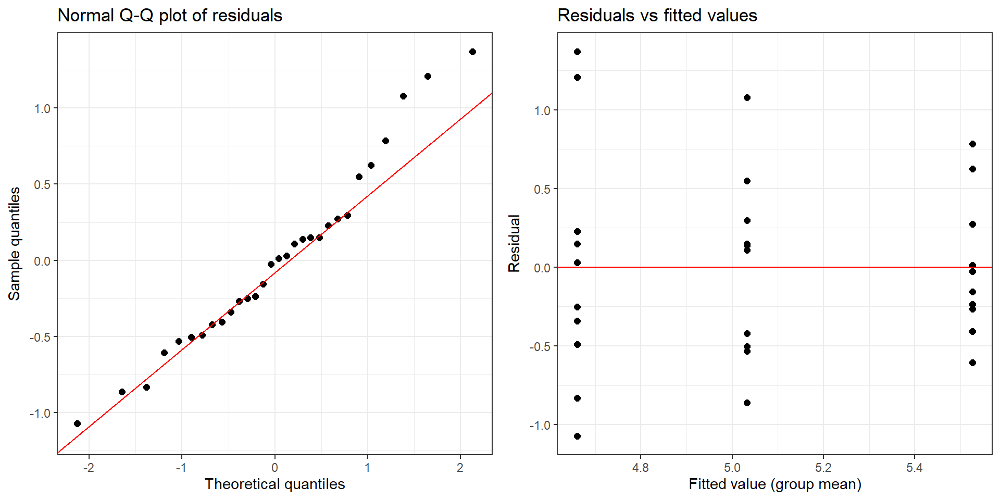

Earlier in the semester we compared the means of two independent groups using a two-sample \(t\)-test. A great many real questions, though, involve more than two groups. Does the effect on plant growth depend on which of three fertilizers we use? Do four teaching methods produce different average exam scores? Do five varieties of wheat differ in average yield?
The method for answering questions like these is called the Analysis of Variance, almost always shortened to ANOVA. The name sounds like it is about variances, and in a sense it is, but the question it answers is about means. The central idea is one you have already met in a different guise: we split the total variation in the response into a part explained by the groups and a part left over, and then judge whether the explained part is large enough to take seriously.
The obvious thing to try is to test every pair of groups separately. With three groups \(A\), \(B\) and \(C\) that means three tests: \(A\) vs \(B\), \(A\) vs \(C\), and \(B\) vs \(C\). Why not do that?
The problem is that each test carries its own chance of a Type I error. If you run one test at \(\alpha = 0.05\), you have a \(5\%\) chance of wrongly declaring a difference. But if you run several tests and announce a finding when any one of them is significant, the chance that at least one is a false alarm grows quickly. With \(k\) groups there are \(\binom{k}{2}\) pairs, and if the tests were independent the probability of at least one false positive would be
\[ P(\text{at least one Type I error}) = 1 - (1 - \alpha)^{\binom{k}{2}} \]
| Number of groups \(k\) | Number of pairwise tests | P(at least one Type I error) |
|---|---|---|
| 2 | 1 | 0.0500 |
| 3 | 3 | 0.1426 |
| 4 | 6 | 0.2649 |
| 5 | 10 | 0.4013 |
| 6 | 15 | 0.5367 |
With six groups you would be wrong more often than a coin flip. This is called the multiple comparisons problem, and it is the reason we do not simply test every pair. ANOVA replaces all of those tests with a single test of one overall question:
\[ H_0: \mu_1 = \mu_2 = \cdots = \mu_k \]
\[ H_A: \text{at least one } \mu_i \text{ differs from the others} \]
Notice how modest the alternative is. ANOVA does not claim to tell you which means differ, or by how much — only that they are not all the same. Finding out which ones differ is the subject of the next lecture.
Suppose we measure a response in each of three groups. There are two quite different reasons the observations are not all identical:
The first is noise. The second is signal. ANOVA compares the size of the second to the size of the first. If the group means are far apart relative to the scatter inside the groups, we have evidence that the population means really do differ. If the group means are close together compared with the noise, we do not.
The plot below shows the same three group means in two situations. On the left the within-group scatter is small and the separation between groups stands out clearly. On the right the group means sit in exactly the same places, but the noise is so large that the separation is unconvincing.

The black bars mark the group means. They sit in the same places in both panels — what changes is how believable the separation is. ANOVA turns that visual judgement into a number.
Suppose we have \(k\) groups. Write
Measure the total variation in the response as the sum of squared deviations of every observation from the grand mean:
\[ SS_T = \sum_{i=1}^{k} \sum_{j=1}^{n_i} (y_{ij} - \bar{y})^2 \]
This total splits into exactly two pieces. The between-group sum of squares measures how far the group means sit from the grand mean,
\[ SS_B = \sum_{i=1}^{k} n_i (\bar{y}_i - \bar{y})^2 \]
and the within-group sum of squares measures how far individual observations sit from their own group mean,
\[ SS_W = \sum_{i=1}^{k} \sum_{j=1}^{n_i} (y_{ij} - \bar{y}_i)^2 \]
and these add up:
\[ SS_T = SS_B + SS_W \]
This should look familiar. In simple linear regression we split the total variation the same way, into a part explained by the model and a part left over, \(SS_T = SS_R + SS_E\). ANOVA is the same idea with a categorical explanatory variable instead of a quantitative one: \(SS_B\) plays the role of \(SS_R\), and \(SS_W\) plays the role of \(SS_E\).
We cannot compare \(SS_B\) and \(SS_W\) directly, because each is built from a different number of free quantities. As always, we divide by degrees of freedom to get a mean square, which is just a variance:
\[ MS_B = \frac{SS_B}{k-1} \qquad\qquad MS_W = \frac{SS_W}{N-k} \]
The between-group mean square has \(k-1\) degrees of freedom because it is built from \(k\) group means around one grand mean. The within-group mean square has \(N - k\) degrees of freedom because each of the \(k\) groups contributes \(n_i - 1\). The two add to \(N-1\), the total degrees of freedom.
The test statistic is their ratio:
\[ F_0 = \frac{MS_B}{MS_W} = \frac{SS_B/(k-1)}{SS_W/(N-k)} \sim F(k-1, \ N-k) \]
If \(H_0\) is true and all the population means really are equal, then the group means differ only by chance, \(MS_B\) and \(MS_W\) are both estimating the same underlying variance, and \(F_0\) should be near \(1\). If the means genuinely differ, \(MS_B\) is inflated and \(F_0\) is large. Because only large values of \(F_0\) are evidence against \(H_0\), the ANOVA \(F\)-test is always upper-tailed — even though the alternative hypothesis is two-sided in spirit. The \(p\)-value is
\[ p\text{-value} = P(F > F_0 \mid H_0 \ \text{true}) \]
The results are collected in an ANOVA table:
| Source | Sum of Squares | Degrees of Freedom | Mean Square | F-statistic | \(p\)-value |
|---|---|---|---|---|---|
| Between groups | \(SS_B = \sum n_i(\bar{y}_i - \bar{y})^2\) | \(k-1\) | \(MS_B = SS_B/(k-1)\) | \(F_0 = MS_B/MS_W\) | \(P(F > F_0|H_0)\) |
| Within groups (error) | \(SS_W = \sum\sum (y_{ij} - \bar{y}_i)^2\) | \(N-k\) | \(MS_W = SS_W/(N-k)\) | ||
| Total | \(SS_T = \sum\sum (y_{ij} - \bar{y})^2\) | \(N-1\) |
A greenhouse trial compares three fertilizers. Four plants are grown with each, and the height of each plant is recorded in centimetres after four weeks.
| Fertilizer | Heights (cm) | \(n_i\) | Group mean \(\bar{y}_i\) |
|---|---|---|---|
| A | 8, 10, 9, 9 | 4 | 9 |
| B | 12, 14, 13, 13 | 4 | 13 |
| C | 10, 11, 12, 11 | 4 | 11 |
Here \(k = 3\), each \(n_i = 4\), and \(N = 12\). The grand mean is
\[ \bar{y} = \frac{8 + 10 + \cdots + 11}{12} = 11 \]
Step 1 — between-group sum of squares. Each group has \(n_i = 4\) observations:
\[ SS_B = 4(9 - 11)^2 + 4(13 - 11)^2 + 4(11 - 11)^2 = 16 + 16 + 0 = 32 \]
Step 2 — within-group sum of squares. Deviations are taken from each group’s own mean:
\[ SS_W = \underbrace{(-1)^2 + 1^2 + 0^2 + 0^2}_{\text{group A}} + \underbrace{(-1)^2 + 1^2 + 0^2 + 0^2}_{\text{group B}} + \underbrace{(-1)^2 + 0^2 + 1^2 + 0^2}_{\text{group C}} = 2 + 2 + 2 = 6 \]
Step 3 — check the partition. \(SS_T = SS_B + SS_W = 32 + 6 = 38\), which matches the total sum of squared deviations from the grand mean.
Step 4 — degrees of freedom and mean squares.
\[ MS_B = \frac{SS_B}{k-1} = \frac{32}{2} = 16 \qquad\qquad MS_W = \frac{SS_W}{N-k} = \frac{6}{9} = 0.667 \]
Step 5 — the test statistic.
\[ F_0 = \frac{MS_B}{MS_W} = \frac{16}{0.667} = 24 \sim F(2, 9) \]
Step 6 — the decision. The critical value at \(\alpha = 0.05\) is \(F_{0.95}(2, 9) = 4.26\), and the \(p\)-value is
\[ P(F > 24 \mid H_0 \ \text{true}) = 0.00025 \]
Since \(24 > 4.26\), or equivalently since \(0.00025 < 0.05\), we reject \(H_0\) and conclude that the three fertilizers do not all produce the same mean plant height.
The completed ANOVA table:
| Source | Sum of Squares | Degrees of Freedom | Mean Square | F-statistic | \(p\)-value |
|---|---|---|---|---|---|
| Between groups | 32 | 2 | 16 | 24 | 0.00025 |
| Within groups | 6 | 9 | 0.667 | ||
| Total | 38 | 11 |
R produces exactly the same table with the aov()
function:
fert <- data.frame(
Fertilizer = rep(c('A','B','C'), each = 4),
Height = c(8, 10, 9, 9, 12, 14, 13, 13, 10, 11, 12, 11)
)
#fit the model with aov(response ~ group, data = dataframe)
model = aov(Height ~ Fertilizer, data = fert)
summary(model)## Df Sum Sq Mean Sq F value Pr(>F)
## Fertilizer 2 32 16.000 24 0.000247 ***
## Residuals 9 6 0.667
## ---
## Signif. codes: 0 '***' 0.001 '**' 0.01 '*' 0.05 '.' 0.1 ' ' 1The \(F\)-test above is trustworthy only when three conditions hold:
A useful rule of thumb for the third condition: if the largest group standard deviation is less than twice the smallest, the equal-variance assumption is reasonable. We check all three on real data in the next lecture.
Last time we built the ANOVA \(F\)-test and used it to reject the hypothesis that three fertilizers produce the same mean plant height. But rejecting \(H_0\) leaves the interesting question unanswered: the means are not all equal, so which ones differ? Today we answer that, we check the assumptions the \(F\)-test rests on, and we connect ANOVA back to two tests you already know.
R ships with a data set called PlantGrowth, which
records the dried weight of plants grown under a control condition and
two different treatments, with ten plants in each group (Dobson 1983).
#PlantGrowth is included with R - no package needed
data("PlantGrowth")
str(PlantGrowth)## 'data.frame': 30 obs. of 2 variables:
## $ weight: num 4.17 5.58 5.18 6.11 4.5 4.61 5.17 4.53 5.33 5.14 ...
## $ group : Factor w/ 3 levels "ctrl","trt1",..: 1 1 1 1 1 1 1 1 1 1 ...Always plot the data before testing. Side-by-side boxplots show the group centres and spreads at a glance:
ggplot(PlantGrowth, aes(x = group, y = weight, fill = group)) +
geom_boxplot(alpha = 0.5, outlier.shape = NA) +
geom_jitter(width = 0.12, size = 2) +
theme_bw() +
theme(legend.position = 'none',
axis.title = element_text(size = 13)) +
xlab('Group') + ylab('Dried weight (g)')
The group means and standard deviations:
| Group | \(n_i\) | Mean \(\bar{y}_i\) | Standard deviation \(s_i\) |
|---|---|---|---|
| ctrl | 10 | 5.032 | 0.583 |
| trt1 | 10 | 4.661 | 0.794 |
| trt2 | 10 | 5.526 | 0.443 |
Now the ANOVA:
model = aov(weight ~ group, data = PlantGrowth)
summary(model)## Df Sum Sq Mean Sq F value Pr(>F)
## group 2 3.766 1.8832 4.846 0.0159 *
## Residuals 27 10.492 0.3886
## ---
## Signif. codes: 0 '***' 0.001 '**' 0.01 '*' 0.05 '.' 0.1 ' ' 1The \(F\)-statistic is \(F_0 = 4.85\) on \(2\) and \(27\) degrees of freedom, with a \(p\)-value of \(0.016\). Since \(0.016 < 0.05\) we reject \(H_0\) and conclude that the three groups do not all have the same mean dried weight.
This is the point where it is tempting to look at the group means,
notice that trt2 has the largest and trt1 the
smallest, and announce that both treatments differ from the control. The
\(F\)-test does not license any of
that. It says only that the three means are not all equal.
To find out which pairs differ we need a procedure that compares pairs while keeping the overall Type I error rate at \(\alpha\) — exactly the problem that stopped us running separate \(t\)-tests in the first place.
The standard tool is Tukey’s Honest Significant Difference (HSD) (Tukey 1949). It compares every pair of group means and widens the intervals just enough that the \(95\%\) confidence level applies to the whole family of comparisons at once, not to each one separately. In R it is one line:
TukeyHSD(model)## Tukey multiple comparisons of means
## 95% family-wise confidence level
##
## Fit: aov(formula = weight ~ group, data = PlantGrowth)
##
## $group
## diff lwr upr p adj
## trt1-ctrl -0.371 -1.0622161 0.3202161 0.3908711
## trt2-ctrl 0.494 -0.1972161 1.1852161 0.1979960
## trt2-trt1 0.865 0.1737839 1.5562161 0.0120064Read the output one row at a time. diff is the
difference in sample means, lwr and upr give a
confidence interval for the true difference, and p adj is
the \(p\)-value adjusted for the fact
that we are making three comparisons. A pair differs
significantly when its interval does not contain zero,
equivalently when p adj \(<
\alpha\).
| Comparison | Difference in means | 95% CI | Adjusted \(p\)-value | Contains 0? | Conclusion |
|---|---|---|---|---|---|
| trt1-ctrl | -0.371 | (-1.062, 0.320) | 0.3909 | yes | no evidence of a difference |
| trt2-ctrl | 0.494 | (-0.197, 1.185) | 0.1980 | yes | no evidence of a difference |
| trt2-trt1 | 0.865 | (0.174, 1.556) | 0.0120 | no | means differ |
The result is worth pausing on. The only significant pair is
trt2 versus trt1 (\(p = 0.012\)). Neither treatment
differs significantly from the control. The overall \(F\)-test told us the means are not all
equal, and Tukey tells us the reason is that the two treatments differ
from each other — not that either one beats the control. Had we
jumped straight from a significant \(F\) to “the treatments work”, we would have
reported something the data do not support.
An alternative you may see is the Bonferroni correction, which simply tests each of the \(m\) pairs at level \(\alpha/m\) instead of \(\alpha\). With three comparisons at \(\alpha = 0.05\), each pair is tested at \(0.0167\). It is easy to explain and always valid, but it is more conservative than Tukey — it will miss real differences more often — so Tukey’s HSD is generally preferred when all pairwise comparisons are of interest.
Equal variances. From the table of group standard deviations above, the largest is \(0.794\) and the smallest is \(0.443\). Since \(0.794 < 2 \times 0.443 = 0.886\), the rule of thumb is satisfied.
Normality and constant spread. As in regression, we examine the residuals — the distance from each observation to its group mean. A normal quantile plot checks normality, and a plot of residuals against fitted values checks that the spread is similar across groups.
resid.df <- data.frame(fitted = fitted(model), residual = residuals(model))
p1 <- ggplot(resid.df, aes(sample = residual)) +
stat_qq(size = 2) + stat_qq_line(colour = 'red') +
theme_bw() + xlab('Theoretical quantiles') + ylab('Sample quantiles') +
ggtitle('Normal Q-Q plot of residuals')
p2 <- ggplot(resid.df, aes(x = fitted, y = residual)) +
geom_point(size = 2) +
geom_hline(yintercept = 0, colour = 'red') +
theme_bw() + xlab('Fitted value (group mean)') + ylab('Residual') +
ggtitle('Residuals vs fitted values')
ggarrange(p1, p2, ncol = 2)
The points in the Q-Q plot lie close to the diagonal, so normality is reasonable. In the residual plot the three vertical strips have comparable heights, which again supports equal variances. Independence cannot be checked from these plots; it is a question about how the plants were assigned and measured.
ANOVA with two groups is the pooled two-sample \(t\)-test. If \(k = 2\), the ANOVA \(F\)-statistic is exactly the square of the
two-sample \(t\)-statistic, and the two
tests give identical \(p\)-values.
Dropping trt2 and comparing the remaining two groups both
ways:
two <- PlantGrowth[PlantGrowth$group != 'trt2', ]
two$group <- droplevels(two$group)
t.stat <- t.test(weight ~ group, data = two, var.equal = TRUE)$statistic
f.stat <- summary(aov(weight ~ group, data = two))[[1]][1, 'F value']
c(`t squared` = round(unname(t.stat)^2, 4), `F statistic` = round(f.stat, 4))## t squared F statistic
## 1.4191 1.4191ANOVA and regression are the same partition. In Week 15 the regression output ended with an omnibus \(F\)-statistic testing whether the predictor explained a significant share of the variation in the response. That test split \(SS_T\) into \(SS_R + SS_E\); ANOVA splits it into \(SS_B + SS_W\). The arithmetic is identical — only the kind of explanatory variable changes, from quantitative in regression to categorical here.
aov() and read the \(p\)-value. Remember it is always
upper-tailed.